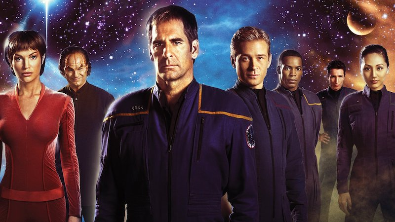

Espace, frontière de l'infini lequel voyage notre vaisseau spatial.
Sa mission: Explorer de nouveaux mondes étranges, découvrir de nouvelles vies, d'autres civilisations, et au mépris du danger, reculer l'impossible
Le décor principal de la série est le vaisseau "Entreprise", où se déroulent en vase clos une grande partie des séquences... Le lieu-clé de l'Entreprise est la "passerelle", la salle de pilotage du vaisseau.
Officier technique, son domaine, c'est la "mécanique". Ecossais bonnace, bourru, bon vivant, un brin primaire, ses idées sont carrées mais viennent du coeur. Sa fierté: le réacteur matière anti-matière de l'Entreprise. Il veille également sur le téléporteur, l'engin qui permet de dissocier les atomes du corps d'un endroit pour les reconstituer intacts dans un autre, grâce au rapport matière-énergie. La précision est au mètre près...
L'officier des transmissions est une jeune femme dont le nom signifie "liberté" en swahili. Son regard dégage une douceur infinie. Dans les moments de détentes à bord de l'Entreprise, elle chante des mélodies suaves et nostalgiques, accompagnée à la lyre vulcaine par Mr Spock.
Cosmopolite, l'équipage de l'Entreprise compte parmi ses officiers-pilotes un Russe pas très malin, et un Japonais facétieux. Tous deux font quasiment partie du décor de la "passerelle".
Le corps, et au-delà le monde matériel, auquel notre corps physique appartient
L'âme, centre des émotions
L'esprit, siège de l'intelligence et de la conscience.
La plus philosophique des séries de SF enfin en DVD et en version intégrale, dans 3 boitiers au design très Star Trek !